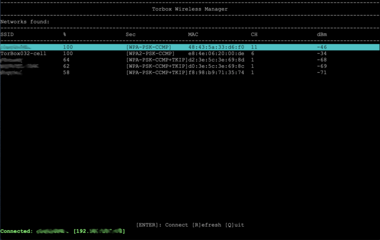
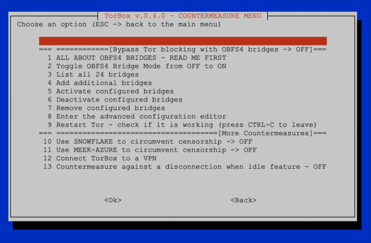

In the last months, we travelled around, and with this release, we tried to implement some improvements based on our experience with the daily application of the TorBox. The most significant improvement is abolishing wicd and introducing our new TorBox Wireless Manager (TWM). Not only is the TWM much easier to use, but it also doesn’t need so much power. Another pleasant novelty is the support of Azur-Meek and Snowflake, which should also work in China. During our travels, we have noticed incorrect DNS resolution regarding torproject.org in some countries. Probably, this is a kind of cheap censorship mechanism. For this reason, during the installation and updates, local DNS resolutions are made through Google’s and Cloudflare’s Domain Name Servers instead of using the Internet Providers presetting delivered by DHCP. Important: these settings are only for TorBox local traffic; all data from the clients are routed through Tor (including DNS requests). Nevertheless, some user complained about using Google’s and Cloudflare’s DNS servers and requested to implement other DNS servers. In the FAQ, we explain our decision in detail and how someone, who cannot live with it, has the possibility to change these settings.
TorBox Image (about 1 GB): v.0.4.0 (10.04.2021) – SHA-256 values
TorBox Menu only: v.0.4.0 (10.04.2021) – SHA-256 values
We strongly recommend using the new image rather than updating an existing system.

Changelog:v.0.3.2 (24.08.2020) –> v.0.4.0 (10.04.2021)
- Update: The system is based on Raspberry Pi OS “Buster” Lite with a Linux Kernel 5.10.17 and Tor version 0.4.5.7. The Tor Project fixed in this latest version two critical denial-of-service bugs: TROVE-2021-001 and TROVE-2021-002, of which only the first one is relevant for clients.
- New: wicd has been replaced by the TorBox Wireless Manager (TWM). We like to hear your feedback.
- New: Support for Meek-Azure and Snowflake implemented, which should also work in China. Meek uses a technique called “domain fronting” to send a message to a Tor relay in a way that is hard to block. Meek-Azure makes it look like you are browsing to Microsoft’s Azure server instead of using Tor. Snowflake is an improvement upon Flashproxy. It sends your traffic through WebRTC, a peer-to-peer protocol with built-in NAT punching. However, because Meek-Azure and Snowflake are slower, OBFS4 bridges should be used first. If not needed, the best is not to use bridges in the first place. Please, tell us about your experiences with the use of bridges to circumvent censorship.
- New: Based on several user requests, the configuration sub-menu (entry 11) comprises now an option to block all HTTP plain text traffic through Tor. This should avoid unencrypted data traffic at the Exit Node, which could break your anonymity (see here). However, it is possible that not only http-requests but also other tools, such as VPN clients, will no longer work. Where possible, we recommend installing HTTPS Everywhere in the Browser. We like to hear your feedback on your experiences about that feature so that we can decide if we should block all HTTP plain text traffic by default, starting with one of the next releases.
- New: Based on several user requests, TorBox can be configured to be accessed with SSH from the Internet.
- New: Based on several user requests, support for additional network driver were added: Realtek 8188eu, 8188fu, 8192eu, 8812au, 8814au, 8821au, 8821cu, and 8822bu.
- New: It is now possible to connect/disconnect the TorBox from a VPN using the countermeasure sub-menu without changing Tor’s primary interface to the Internet. With this feature, the user can influence the route of the local network data from the command line and, for example, circumvent censorship measures that don’t allow updating TorBox. Additionally, it gives the possibility to completely disconnect the TorBox from a VPN after finishing using main menu entry 9, which enables TorBox to use route Tor over VPN (for more information about Tor over VPN / VPN over Tor, see here).
- New: In the main menu, in the top of the right corner, a message shows not only if Tor is working (meaning https://check.torproject.org returns a positive result), but also if the TorBox is connected to a VPN (meaning that local network data from the command prompt is routed through VPN).
- New: Installation script for Debian 10 (Buster) and Debian 11 (Bullseye) – for more information, see here.
- Fixed: The user “torbox” was not a member of the group “netdev”, which causes a display error in the entry 1 and 3 in the update and reset sub-menu.
- Fixed: During the installation of TorBox with the installation script, Tor will be compiled because the the Tor Project doesn’t provide a binary version for the Raspberry Pi. We had this option before in the update and reset sub-menu but not in the installation script, which leads to missing tor packages.
- Fixed: Fixed the download path for the TorBox menu in the installation as well as in the update and reset sub-menu. We also changed the GitHub download path for the Raspberry Pi Framebuffer Copy needed for AdAfruits Pi TFT installation. GitHub is suddenly changing URLs, which is a pain in the ass.
- Fixed: Missing path to torbox.lib in some scripts, which use Bridges and prevented Tor from restarting automatically.
- Fixed: Wrong menu entry relating to the countermeasure against a disconnection when idle after a restart.
- Improved: During the installation and updates, local DNS resolutions are made through Google’s and Cloudflare’s Domain Name Servers to avoid cheap censorship mechanism. Important: these settings are only for TorBox local traffic; all data from the clients are routed through Tor (including DNS requests). For more information and an explanation of how it is possible to change it, see here.
- Improved: The support for Sixfab Shields/HATs for cellular connections can now be installed offline.
- Improved: The script to install the Adafruit PI TFT is now locally stored and not fetched from the Adafruit Github Repository (Adafruit changed it, and it was broken). However, an Internet connection is still necessary for the installation.
- Improved: The support for installing TorBox on a Ubuntu 20.04 / 20.10 or Debian Buster/Bullseye system. TorBox’s implementation on other systems and hardware is experimental because we do not have the resources to check all details on all different installations. You can help us with reporting errors back to us.
- Improved: Cleaned up the code and outsourced more essential functions into the TorBox library or separate sub-scripts. This will help to maintain the code in future releases properly.
- Improved: The appearance of all menus has been streamlined, and in the files, we fixed some minor errors.

Known problems and bugs
- LIMITATION: If HTTP plain text traffic is blocked (configuration sub-menu entry 11), .onion addresses, which use “http://”doesn’t work anymore directly with Chrome and Chromium. Both browsers will behave like all other browsers by default, because based on IETF RFC 7686, applications that do not implement the Tor protocol generate an error upon the use of .onion and do not perform a DNS lookup. However, .onion addresses using “http://” can be used through SOCKS 5 even if the HTTP plain text traffic is blocked. Onion addresses using “http://” can also be used with the Tor Browser – with or without its own Tor instance – running on a client. ? In other words, blocking HTTP plain text traffic does not work if SOCKS 5 proxy functionality or Tor Browser is used on a client. ? WARNING MESSAGE ADDED✔︎
. - PROBLEM: People running an OBFS4 bridge relay will probably encounter the following hourly error message: “Unable to find IPv6 address for ORPort xxxx.” It seems that with Tor version 0.4.5.* the Tor Project focuses on improving the IPv6 support (until now, a Tor relay needs a public IPv4 address). At the same time, they changed the address auto-discovery behaviour (see here, here and here), which probably leads to this hourly error message. Even, the Tor Project writes in the Changelog for 0.4.5.7 that they removed “a spammy log notice falsely claiming that the IPv4/v6 address was missing”, it doesn’t seem to work completely. However, this error message has no negative on the operation and the status on Metrics. PROBLEM SOLVED✔︎
. - BUG: Entry 5 in the update and reset sub-menu, which should update the TorBox menu fails to remove the old lib/__pycache__ directory. Even if saying yes to remove it, the update will be incompleted because it cannot replace the old lib directory. Unfortunatelly, all files in that directory except lib/__pycache__ are deleted, so that the TorBox menu will not properly work anymore. It can be fixed with the following procedure:
– Leave the TorBox menu by pressing ESC
– Typesudo chmod a+w -R lib
– Start TorBox menu again by typing./menu
– Start the update and reset sub-menu and execute entry 5
.
After this procedure and the successful update, the bug is fixed. The current image is updated. BUG FIXED✔︎
. - BUG: This affects only Bridge Relay operators: due to a bug in the main menu script, every second time when the main menu was started, the OBFS4 and ORPort was blocked, which set the Bridge Relay offline. You can fix these bug by updating the TorBox menu (update and reset sub-menu entry 5). The current image is updated. BUG FIXED✔︎
. - BUG: Already in TorBox v.0.3.2, main menu’s start-up can be stuck on the message “Checking connectivity to the Internet – please wait…” for an annoying amount of time if TorBox has no Internet connection. In TorBox v.0.4.0, the introduced timeout had no effect because we did it in a wrong way. You can fix these bug by updating the TorBox menu (update and reset sub-menu entry 5). The current image is updated. BUG FIXED✔︎.
. - BUG: Using entry 10 in the configuration sub-menu to enable the SSH access to TorBox from the Internet was not permanent when chosen so, but was permanent when chosen temporary (for a description and a quick fix, see issue #46). You can fix these bug by updating the TorBox menu (update and reset sub-menu entry 5). BUG FIXED✔︎
. - BUG: Entry 7 in the update and reset sub-menu did not erase all passwords in the TorBox Wireless Manager. To take effect, a reboot is needed. You can fix these bug by updating the TorBox menu (update and reset sub-menu entry 5). BUG FIXED✔︎
BUG: Because of a wrong variable name, the Snowflake and the Meek-Azure bridges got in the way (for details see issue #48). Nyxnor fixed the bug with the pull request #49 and #51. You can fix these bug by updating the TorBox menu (update and reset sub-menu entry 5). BUG FIXED✔︎
. - BUG: Since TorBox v.0.3.2, we introduced a new SOCKS v5, which supports destination address stream isolation. Unfortunately, we used the port number, which is reserved for the Tor control port. So far, this didn’t have any adverse side effects. However, this is not the way it supposed to be. For that reason, we changed the SOCKS v5 port for destination address stream isolation to 9052.
You can fix these bug by changing in /etc/tor/torrc the following lines:The proposed fix will most likely break tor because the menu script must also be adapted to the new port. For that reason, the fix will be included in TorBox v.0.4.1. BUG NOT FIXED IN v.0.4.0?SocksPort 192.168.42.1:9051 IsolateDestAddr->SocksPort 192.168.42.1:9052 IsolateDestAddrandSocksPort 192.168.43.1:9052 IsolateDestAddr->SocksPort 192.168.42.1:9052 IsolateDestAdd(with or without #) or by updating the TorBox menu (update and reset sub-menu entry 5) and than copying the default torrc to /etc (cp etc/tor/torrc /etc/tor/torrc).
. - LOOK&FEEL: Because we offer several install scripts, which dependent on the operating system, install Tor in different ways, we decided to put the repository for Tor’s binaries and sources, knowing that, for example, on Raspberry Pi OS with apt-get update an error message is shown, which does not affect. However, inexperienced users might be discouraged by the error message. See also issue #36. You can fix these bug by updating the TorBox menu (update and reset sub-menu entry 5). The current image is updated. CLOSED✔︎